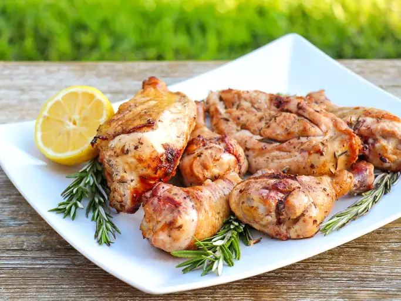

Greek Chicken

Description
This Greek chicken recipe is great for a light summer meal. I serve it with sliced tomatoes, feta cheese, and garlic bread.
Ingredients
- ½ cup olive oil
- 2 lemons, juiced
- 3 cloves garlic, chopped
- 1 tablespoon chopped fresh rosemary
- 1 tablespoon chopped fresh thyme
- 1 tablespoon chopped fresh oregano
- 1 (4 pound) chicken, cut into pieces
Directions to cook
- Mix olive oil, lemon juice, garlic, rosemary, thyme, and oregano in a glass dish. Place chicken pieces in the mixture; cover and marinate in the refrigerator, 8 hours to overnight.
- Preheat an outdoor grill for high heat and lightly oil the grate.
- Place chicken on the grill, and discard the marinade. Cook until chicken is no longer pink at the bone and the juices run clear, about 15 minutes per side (smaller pieces will not take as long). An instant-read thermometer inserted near the bone should read 165 degrees F (74 degrees C).
| Calories |
Fat |
Carbs |
Protein |
| 412 |
31g |
4g |
31g |